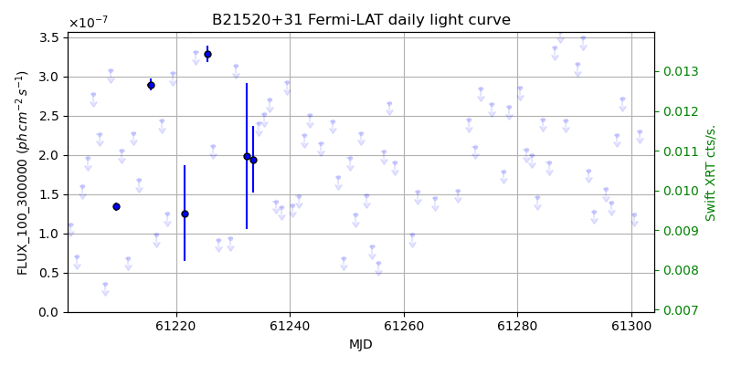
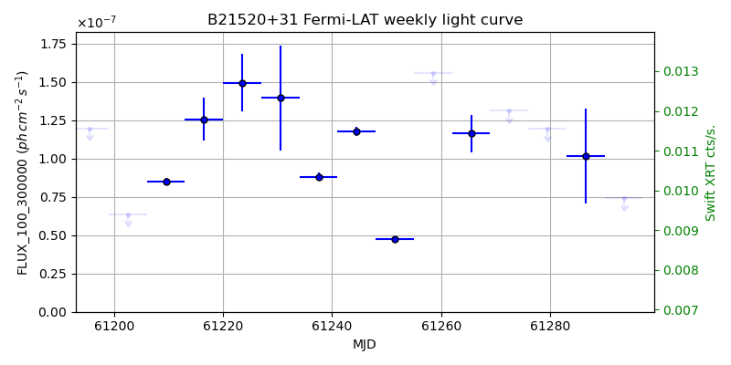
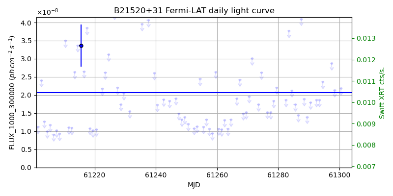
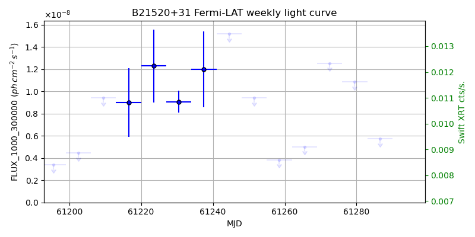

LAT Lightcurve site: https://fermi.gsfc.nasa.gov/ssc/data/access/lat/msl_lc/source/B2_1520p31
Swift site: https://www.swift.psu.edu/monitoring/source.php?source=B21520+31
NED: Query
Time of last update of this page: UT: 2026-09-19 15:20 (MJD: 61302.640)
| Property | Value |
|---|---|
| R.A. | 15:22:10.08 |
| Dec. | 31:44:13.2 |
| z | 1.489 |
| 3FGL SpectrumType | LogParabola |
| 3FGL PL Index | |
| 3FGL Flux_100_300000 | 4.06e-07 1 / (s cm2) |
| 3FGL Flux_1000_300000 | 2.07e-08 1 / (s cm2) |
| 3FGL Flux >200 GeV | 6.94e-12 1 / (s cm2) |
| 3FGL Extrap. Crab >200 GeV | 0.03 |
| 3FGL Flux After EBL Absorption >200GeV | 1.61e-14 1 / (s cm2) |
| 3FGL EBL Crab Fraction >200GeV | 0.00 |

| MJD | dMJD | Flux | dFlux | Frac3FGL | FracCrab>200GeV | EBLFracCrab>200GeV |
|---|---|---|---|---|---|---|
| 61297.50 | 0.50 | 2.26e-07 | 0.00e+00 | 0.00 | 0.00 | 0.00 |
| 61298.50 | 0.50 | 2.72e-07 | 0.00e+00 | 0.00 | 0.00 | 0.00 |
| 61299.50 | 0.50 | 3.71e-07 | 0.00e+00 | 0.00 | 0.00 | 0.00 |
| 61300.50 | 0.50 | 1.25e-07 | 0.00e+00 | 0.00 | 0.00 | 0.00 |
| 61301.50 | 0.50 | 2.30e-07 | 0.00e+00 | 0.00 | 0.00 | 0.00 |

| MJD | dMJD | Flux | dFlux | Frac3FGL | FracCrab>200GeV | EBLFracCrab>200GeV |
|---|---|---|---|---|---|---|
| 61265.50 | 3.50 | 1.16e-07 | 1.24e-08 | 0.29 | 0.01 | 0.00 |
| 61272.50 | 3.50 | 1.31e-07 | 0.00e+00 | 0.00 | 0.00 | 0.00 |
| 61279.50 | 3.50 | 1.19e-07 | 0.00e+00 | 0.00 | 0.00 | 0.00 |
| 61286.50 | 3.50 | 1.02e-07 | 3.10e-08 | 0.25 | 0.01 | 0.00 |
| 61293.50 | 3.50 | 7.42e-08 | 0.00e+00 | 0.00 | 0.00 | 0.00 |

| MJD | dMJD | Flux | dFlux | Frac3FGL | FracCrab>200GeV | EBLFracCrab>200GeV |
|---|---|---|---|---|---|---|
| 61297.50 | 0.50 | 2.88e-08 | 0.00e+00 | 0.00 | 0.00 | 0.00 |
| 61298.50 | 0.50 | 2.13e-08 | 0.00e+00 | 0.00 | 0.00 | 0.00 |
| 61299.50 | 0.50 | 6.87e-08 | 0.00e+00 | 0.00 | 0.00 | 0.00 |
| 61300.50 | 0.50 | 2.18e-08 | 0.00e+00 | 0.00 | 0.00 | 0.00 |
| 61301.50 | 0.50 | 5.52e-08 | 0.00e+00 | 0.00 | 0.00 | 0.00 |

| MJD | dMJD | Flux | dFlux | Frac3FGL | FracCrab>200GeV | EBLFracCrab>200GeV |
|---|---|---|---|---|---|---|
| 61265.50 | 3.50 | 5.01e-09 | 0.00e+00 | 0.00 | 0.00 | 0.00 |
| 61272.50 | 3.50 | 1.25e-08 | 0.00e+00 | 0.00 | 0.00 | 0.00 |
| 61279.50 | 3.50 | 1.09e-08 | 0.00e+00 | 0.00 | 0.00 | 0.00 |
| 61286.50 | 3.50 | 5.74e-09 | 0.00e+00 | 0.00 | 0.00 | 0.00 |
| 61293.50 | 3.50 | 1.88e-08 | 0.00e+00 | 0.00 | 0.00 | 0.00 |
--------------------------------------------------------- Using user-supplied coords: 15:22:10.08 31:44:13.2 2000 --------------------------------------------------------- FLWO UT night of: 2026-09-20 Local Sid. @ Midnight: 23:32 Sunset (-15.0) (local, UT): 19:31 02:31 Sunrise (-15.0) (local, UT): 05:04 12:04 Moonrise (local, UT): Moonset (local, UT): 00:13 07:13 Moon phase: 0.64 --------------------------------------------------------- AzTime LSID UT Obj_el Obj_az Mn_el Mn_az Sep. --------------------------------------------------------- 19:31 19:03 02:31 43.7 285.3 30.5 184.0 76.7 20:01 19:33 03:01 37.6 287.7 29.7 191.5 76.8 20:31 20:03 03:31 31.5 290.2 28.1 198.7 76.9 21:01 20:33 04:01 25.6 292.9 25.8 205.5 76.9 21:31 21:03 04:31 19.8 295.7 22.9 211.9 77.0 22:01 21:33 05:01 14.1 298.8 19.4 217.8 77.1 22:31 22:03 05:31 8.6 302.1 15.4 223.2 77.1 23:01 22:33 06:01 3.4 305.7 11.0 228.1 77.2 23:31 23:04 06:31 -1.0 309.6 6.3 232.6 77.3 00:01 23:34 07:01 -6.6 313.8 1.5 236.7 77.4 00:31 00:04 07:31 -11.1 318.5 -2.6 240.5 77.5 01:01 00:34 08:01 -15.1 323.6 -9.5 244.1 77.6 01:31 01:04 08:31 -18.7 329.2 -15.1 247.4 77.7 02:01 01:34 09:01 -21.6 335.2 -20.8 250.6 77.8 02:31 02:04 09:31 -24.0 341.7 -26.6 253.6 77.9 03:01 02:34 10:01 -25.6 348.5 -32.5 256.6 78.1 03:31 03:04 10:31 -26.5 355.6 -38.4 259.6 78.2 04:01 03:34 11:01 -26.6 2.7 -44.5 262.6 78.4 04:31 04:04 11:31 -25.9 9.8 -50.5 265.8 78.5 05:01 04:34 12:01 -24.4 16.7 -56.6 269.4 78.7 05:04 04:37 12:04 -24.3 17.3 -57.1 269.7 78.7 --------------------------------------------------------- Dark hours >55 deg.: 0.00